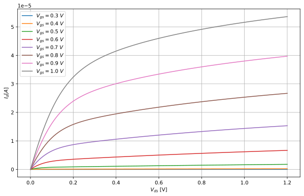

Analysis in Python
Sometimes, doing analysis of the simulation results can be cumbersome. To facilitate this, we can use Python scripts to process the raw data files generated by the simulations. This allows us to automate the analysis and generate plots or reports more easily.
Reading .raw files¶
For reading in .raw files, multiple libraries exist. For me, it was easiest to use my own file parser:
Custom Python .raw parser
class NGSpiceRaw:
def __init__(self, fname: str, live: bool = True):
"""
Initialize the NGSpiceRaw object.
Args:
fname (str): The name of the .raw file to read.
live (bool): Whether to reload the file on each access.
"""
self.fname = fname
self.live = live
self._reload()
def _reload(self):
self.arrs, self.plots = self._read_raw(self.fname)
self.plot, self.arr = self.plots[-1], self.arrs[-1]
print(f"Loaded {len(self.plots)} plots from {self.fname}")
def _read_raw(self, fname: str):
"""
Read a binary ngspice .raw file.
Returns:
arrs : list of numpy structured arrays, one per plot
plots : list of metadata dicts, parallel to arrs
"""
with open(fname, 'rb') as fp:
arrs = []
plots = []
plot = {}
while True:
line = fp.readline(BSIZE_SP)
if not line:
break
parts = line.split(b':', 1)
if len(parts) != 2:
continue
key, val = parts[0].lower(), parts[1].strip()
if key in MDATA_LIST:
plot[key] = val
if key == b'variables':
nvars = int(plot[b'no. variables'])
npoints = int(plot[b'no. points'])
plot['varnames'] = []
plot['varunits'] = []
for _ in range(nvars):
ascii_line = fp.readline(BSIZE_SP).decode('ascii')
idx, name, *unit = ascii_line.split()
plot['varnames'].append(name)
plot['varunits'].append(unit[0])
if key == b'binary':
# build dtype (complex if flagged, else float)
fmt = np.complex_ if b'complex' in plot[b'flags'] else float
row_dtype = np.dtype({
'names': plot['varnames'],
'formats': [fmt]*len(plot['varnames'])
})
# read data block
data = np.fromfile(fp, dtype=row_dtype, count=npoints)
arrs.append(data)
plots.append(plot.copy())
plot.clear()
fp.readline()
return arrs, plots
def select(self, idx: int):
"""
Select a plot by index.
"""
if idx < -len(self.plots) or idx >= len(self.plots):
raise IndexError("Index out of range")
self.plot = self.plots[idx]
self.arr = self.arrs[idx]
return self.plot, self.arr
@property
def names(self):
return self.arr.dtype.names
def __getitem__(self, key):
"""
Get a variable by name or index.
"""
if self.live:
self._reload()
if key in self.names:
return self.arr[key]
else:
raise KeyError(f"Variable '{key}' not found")
def __setitem__(self, key, value):
"""
Set a variable by name or index.
"""
if self.live:
self._reload()
if key in self.names:
raise KeyError(f"Variable '{key}' already exists")
else:
# Add new variable to the array
new_dtype = np.dtype(self.arr.dtype.descr + [(key, value.dtype)])
new_arr = np.zeros(self.arr.shape, dtype=new_dtype)
for name in self.names:
new_arr[name] = self.arr[name]
new_arr[key] = value
self.arr = new_arr
self.arrs[-1] = new_arr
self.plot['varnames'].append(key)
self.plot['varunits'].append('')
self.plot[b'no. variables'] = str(len(self.plot['varnames']))
self.plot[b'no. points'] = str(len(self.arr))
This parser is quite easy to use:
data = NGSpiceRaw("../simulations/dc_lv_nmos.raw", live=False) #(3)!
print("Fields:", data.names) #(1)!
v_ds = data["v(v-sweep)"] #(2)!
i_vd = data["i(vd)"]
v_th = data["v(@n.xm1.nsg13_lv_nmos[vth])"]
gm = data["@n.xm1.nsg13_lv_nmos[gm]"]
gds = data["@n.xm1.nsg13_lv_nmos[gds]"]
cgs = data["@n.xm1.nsg13_lv_nmos[cgsol]"]
cgd = data["@n.xm1.nsg13_lv_nmos[cgdol]"]
- This will print all the available traces
- Traces can be accessed directly via their names
- If live were to be True, the data would be loaded from the file every time a trace is accessed
Sweeps¶
I did not yet find out how to properly extract sweeps from the data. Here is the hacky workaround I have used:
class Sweep:
def __init__(self):
self.values = np.array([])
def linear(self, start: float, stop: float, step: float):
self.values = np.arange(start, stop + step, step)
return self
def split(self, data: np.ndarray):
if len(data) % len(self.values) != 0:
raise ValueError("Data length is not divisible by n")
return np.array(np.array_split(data, len(self.values)))
def __getitem__(self, index: int):
if index < 0 or index >= len(self.values):
raise IndexError("Index out of range")
return self.values[index]
vgs_sweep = Sweep().linear(0.0, 1.0, 0.1) #(1)!
v_ds = vgs_sweep.split(v_ds)[0] #(2)!
i_vd = vgs_sweep.split(i_vd)
v_th = vgs_sweep.split(v_th)
gm = vgs_sweep.split(gm)
gds = vgs_sweep.split(gds)
cgs = vgs_sweep.split(cgs)
cgd = vgs_sweep.split(cgd)
- The sweep we have here is \(V_{gs}\) from 0 to 1V in 0.1V steps
- \(V_{ds}\) will be the same every time since it's the second sweep parameter
Plotting¶
To plot the resulting drain current of this sweep of a MOSFET, you would then do:
plt.figure(figsize=(10, 6))
for i, (vgs, values_split) in enumerate(zip(vgs_sweep.values, i_vd)):
plt.plot(v_ds, values_split, label=f"$V_{{gs}} = {vgs:.1f}\\ V$", linewidth=1.5)
plt.xlabel("$V_{ds}$ [V]")
plt.ylabel("$I_{d} [A]$")
plt.legend()
plt.grid(True)
plt.show()
Which results in the following plot: 
{kind=link}